Speex is based on CELP, which stands for Code Excited Linear Prediction. This section attempts to introduce the principles behind CELP, so if you are already familiar with CELP, you can safely skip to section 7. The CELP technique is based on three ideas:
Linear prediction is at the base of many speech coding techniques, including CELP. The idea behind it is to predict the signal
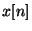
using a linear combination of its past samples:
![\begin{displaymath}
y[n]=\sum_{i=1}^{N}a_{i}x[n-i]\end{displaymath}](img4.png)
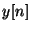
is the linear prediction of . The prediction error is thus given by: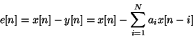
The goal of the LPC analysis is to find the best prediction coefficients
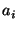
which minimize the quadratic error function: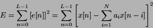
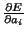
equal to zero: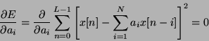
The filter coefficients are computed using the Levinson-Durbin
algorithm, which starts from the auto-correlation
 of the signal .
of the signal .
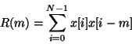
For an order  filter, we have:
filter, we have:
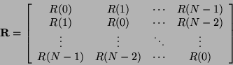
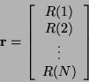
The filter coefficients are found by solving the system
 .
What the Levinson-Durbin algorithm does here is making the solution
to the problem
.
What the Levinson-Durbin algorithm does here is making the solution
to the problem
 instead of
instead of
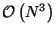
by exploiting the fact that matrix is toeplitz hermitian. Also, it can be proven that all the roots of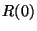
by a number slightly above one (such as 1.0001), which is equivalent to adding noise to the signal. Also, we can apply a window to the auto-correlation, which is equivalent to filtering in the frequency domain, reducing sharp resonances.
The linear prediction model represents each speech sample as a linear
combination of past samples, plus an error signal called the excitation
(or residual).
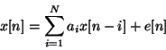
In the z-domain, this can be expressed as
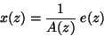
where  is defined as
is defined as
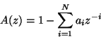
We usually refer to  as the analysis filter and
as the analysis filter and  as
the synthesis filter. The whole process is called short-term prediction
as it predicts the signal using a prediction using only the
as
the synthesis filter. The whole process is called short-term prediction
as it predicts the signal using a prediction using only the
 past samples, where
past samples, where  is usually around 10.
is usually around 10.
Because LPC coefficients have very little robustness to quantization, they are converted to Line Spectral Pair (LSP) coefficients which have a much better behaviour with quantization, one of them being that it's easy to keep the filter stable.
During voiced segments, the speech signal is periodic, so it is possible to take advantage of that property by approximating the excitation signal
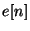
by a gain times the past of the excitation:
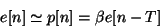
where  is the pitch period,
is the pitch period,
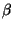
is the pitch gain. We call that long-term prediction since the excitation is predicted from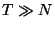
.
The final excitation will be the sum of the pitch prediction and an innovation signal
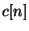
taken from a fixed codebook, hence the name Code Excited Linear Prediction. The final excitation is given by:
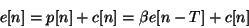
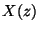
as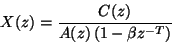
Most (if not all) modern audio codecs attempt to ``shape'' the
noise so that it appears mostly in the frequency regions where the
ear cannot detect it. For example, the ear is more tolerant to noise
in parts of the spectrum that are louder and vice versa. That's
why instead of minimizing the simple quadratic error
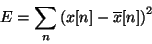
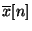
is the encoder signal, we minimize the error for the perceptually weighted signal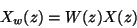
with control parameters
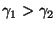
. If the noise is white in the perceptually weighted domain, then in the signal domain its spectral shape will be of the form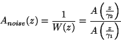
If a filter  has (complex) poles at
has (complex) poles at
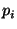
in the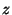
-plane, the filter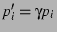
, making it a flatter version of
Analysis-by-synthesis refers to the fact that when trying to find
the best pitch parameters ( , ) and innovation signal ,
we do not work by making the excitation as close as the original
one (which would be simpler), but apply the synthesis (and weighting)
filter and try making
, ) and innovation signal ,
we do not work by making the excitation as close as the original
one (which would be simpler), but apply the synthesis (and weighting)
filter and try making
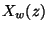
as close to the original as possible.